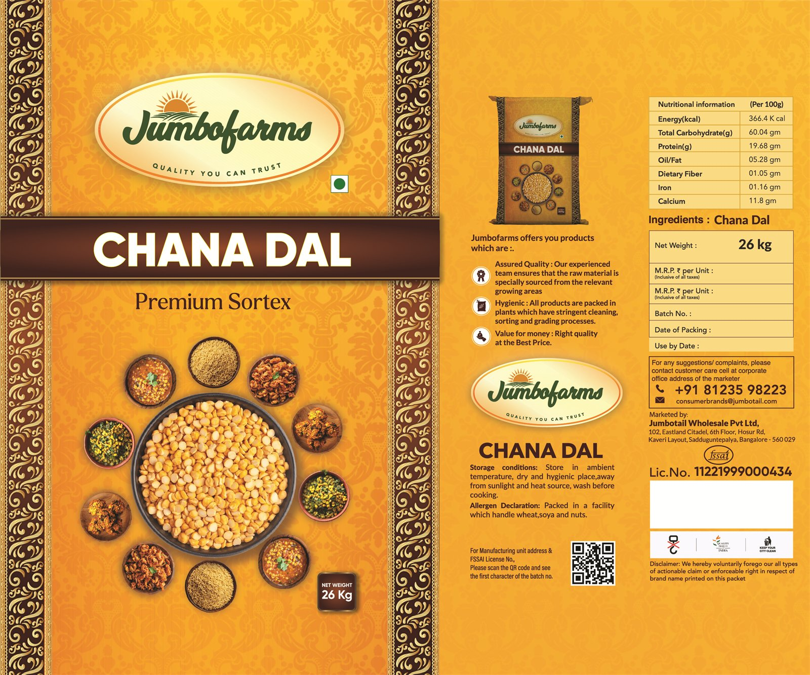
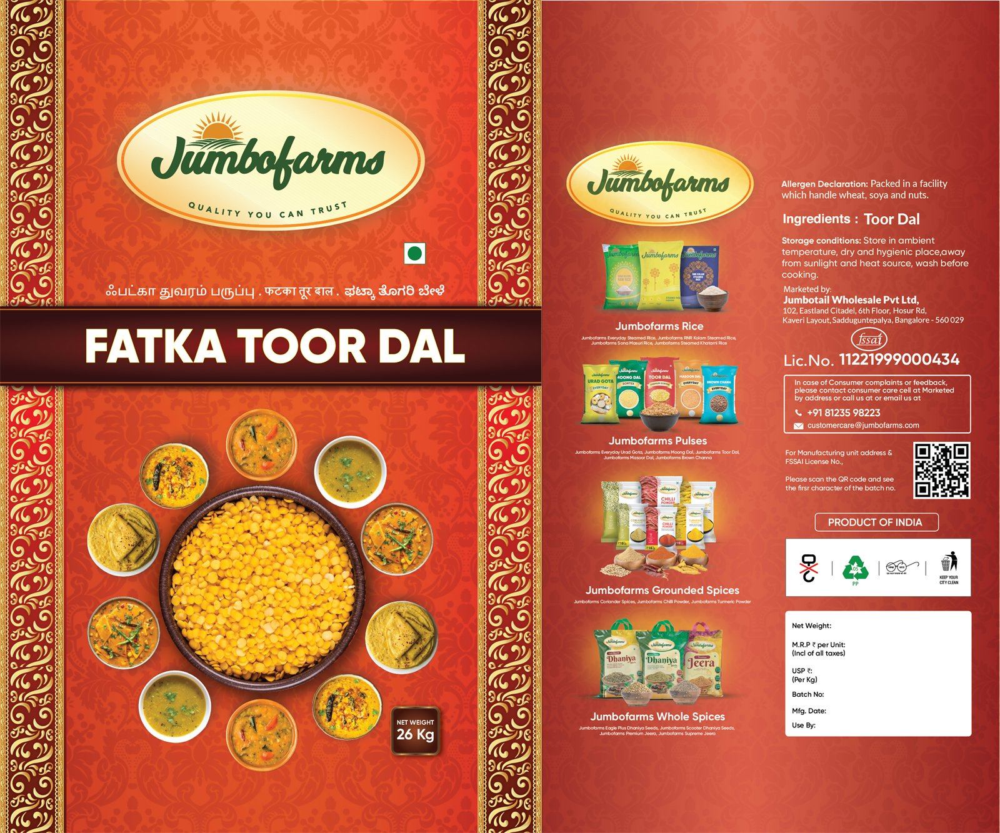
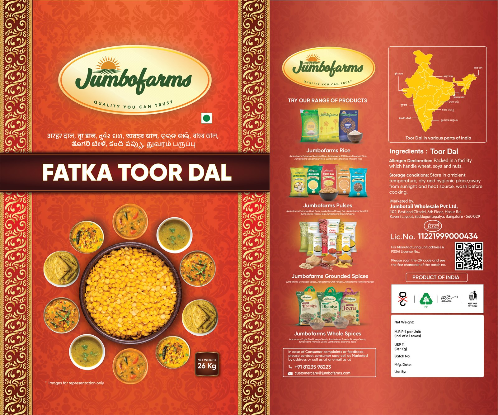
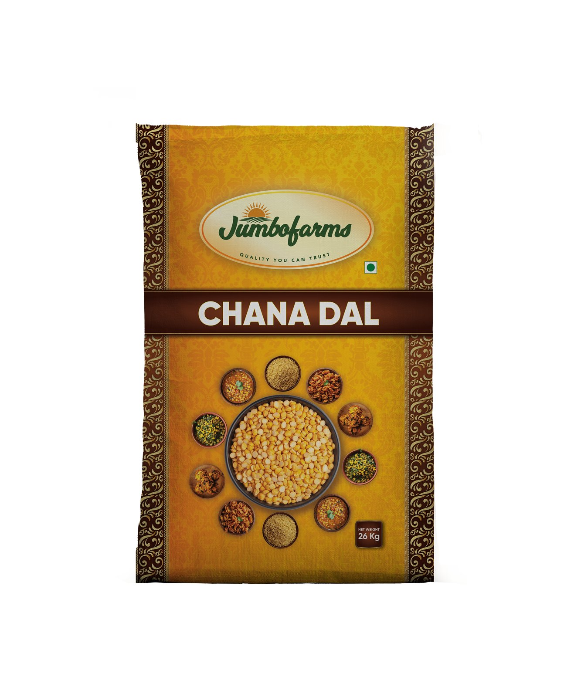

Jumbofarms
Dals
Twenty-six kilo wholesale sacks, where the pack is a document as much as an identity — and where the same artwork had to be set in more than one language.
A bowl, and everything it ends up in.
Both sacks work the same way: an ornate gold border, the Jumbofarms oval at the top, the product name in a dark banner across the middle, and a hero bowl of raw dal ringed by photographs of the dishes it makes.
Chana Dal adds “Premium Sortex” under the name — sortex being the optical cleaning step, and the thing a bulk buyer is paying for.
The same sack, set twice.
Fatka Toor Dal exists in more than one language version, the descriptive line under the logo reset each time while the layout holds.
That is the constraint that shapes bulk packaging in India: the artwork is not one file, it is a template that has to survive having its text replaced by a script with different width and different line depth, without the composition collapsing.
The part that does the actual work.
The back carries the ingredient and allergen declarations, storage conditions, the FSSAI licence number, a QR code, a printed window for net weight, batch, packing and use-by, and a strip cross-selling the other Jumbofarms ranges — rice, pulses, ground spices, whole spices — against a map of India.
On a 26 kg sack sold into a trade, that panel is the sales tool. The front gets it picked up; the back gets it ordered again.
4 pieces of artwork.



